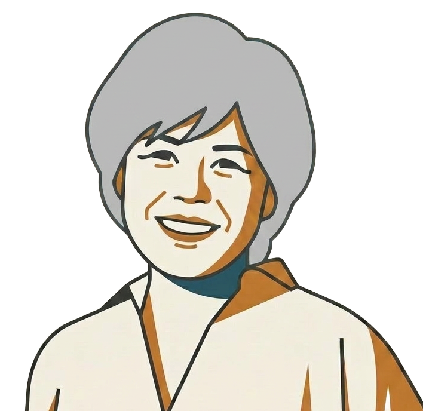
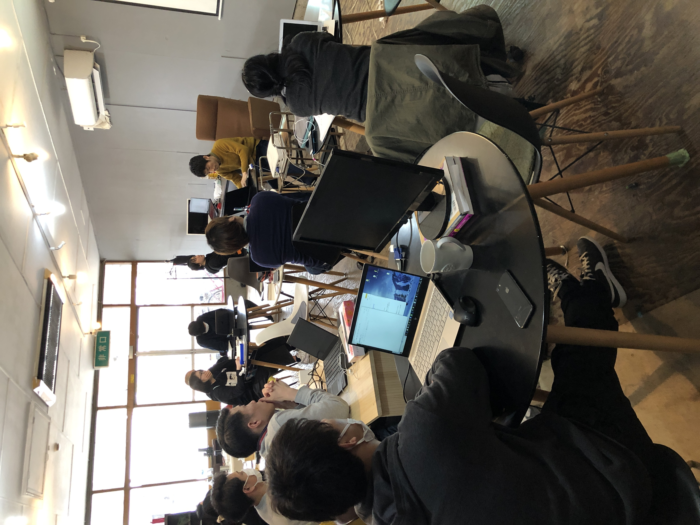
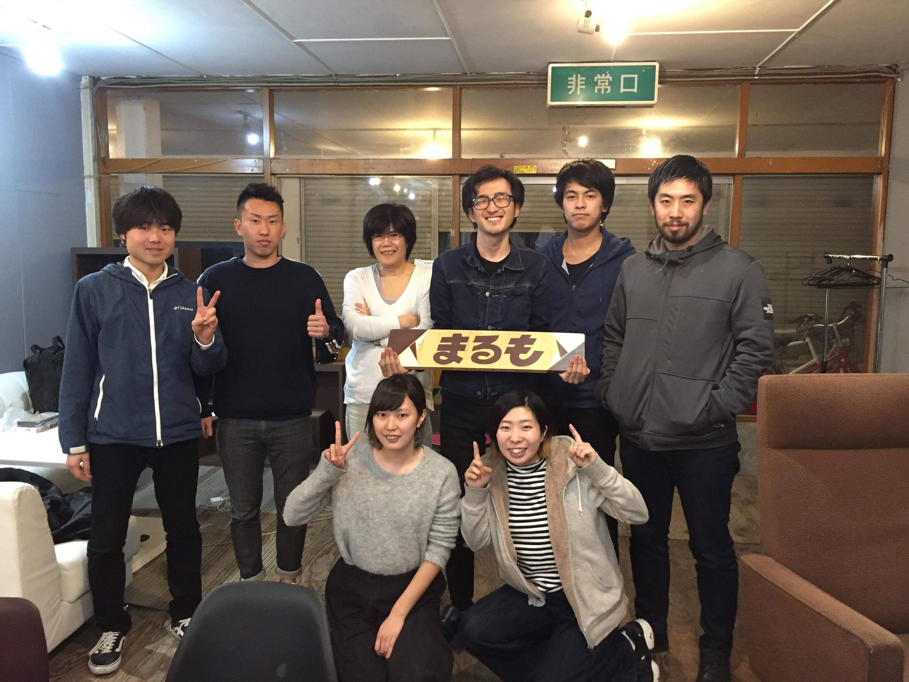
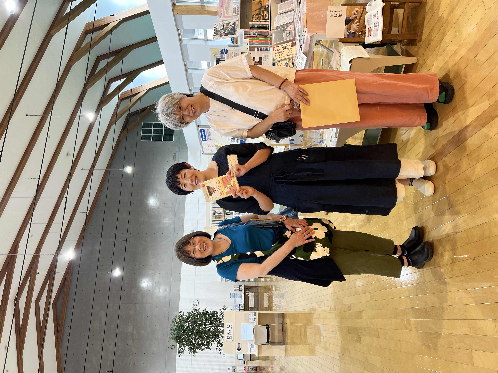
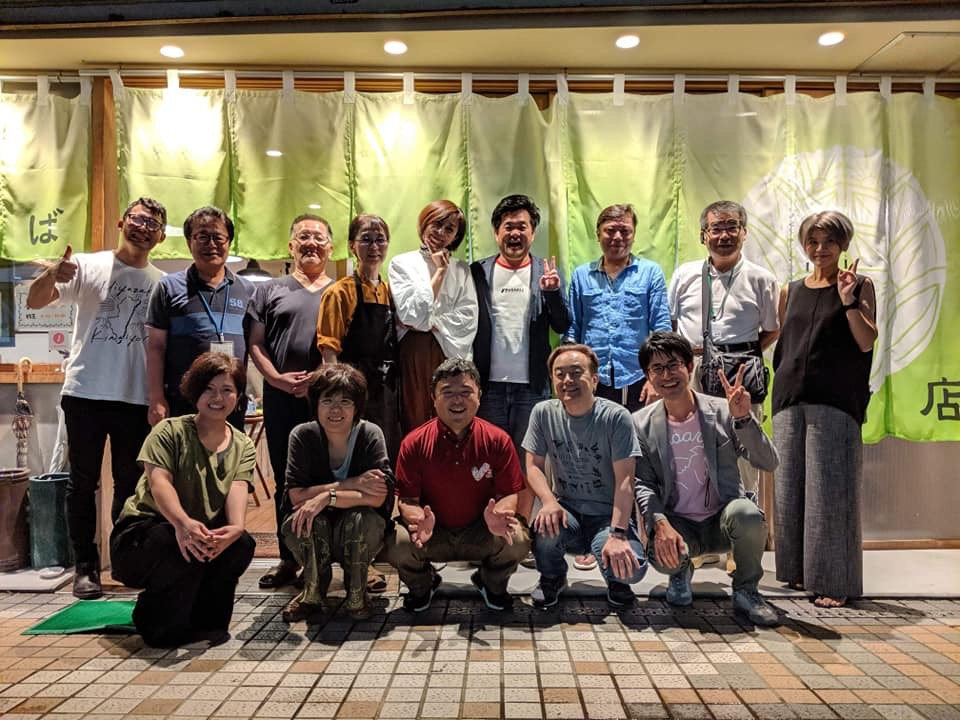

Glocal Lab. 代表
MITSUGU HIROMI
"引き出し多めのデジタルおばさん"
地方と都市をつなぐ・業務設計・DX支援
Currently Active
このサイトは GitHub で制作しています
About Me
2010年に関西から熊本に引っ越してからのこの10年ほど、
全国各地の地域活動やまちづくりの現場を訪ねながら、
について見てきました。
地方では、非効率が"文化"として定着していることがあります。
私は、"仕事を整理し、誰でも説明できる状態にすること"を大切にしています。




Category
Works を見る →
Works を見る →
Works を見る →
よく受ける相談
Works
💡 リンクマークのあるカードはクリックでサイトへ移動します